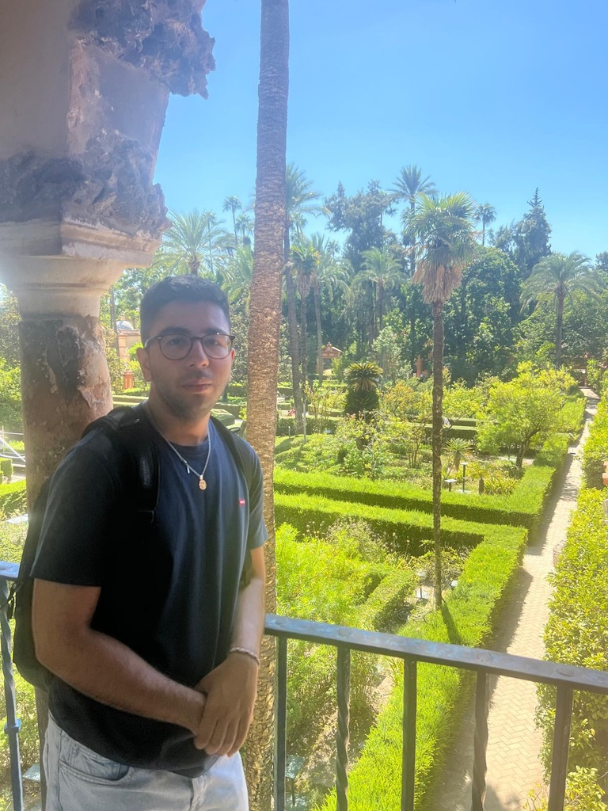

Arian Namazi
MSc CS Student @UniversityofBonn
Data Analytics and GenAI Intern @BOSCH.
Tech Enthusiast. Builder.
MSc CS Student @UniversityofBonn
Data Analytics and GenAI Intern @BOSCH.
Tech Enthusiast. Builder.